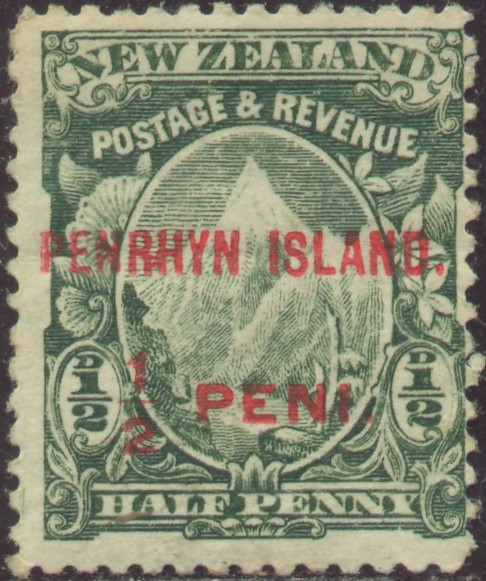
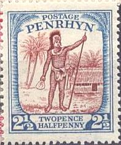

{kind=link}


Return To Catalogue - Cook Islands
Note: on my website many of the
pictures can not be seen! They are of course present in the cd's;
contact me if you want to purchase the catalogue.
Various types 1/2 p green (overprint red, mountains) 1 p red (woman) 2 1/2 p blue (overprint red, lake with mountains) 3 p brown (overprint blue) 6 p red (overprint blue) 1 Sh red (overprint blue)
Value of the stamps |
|||
vc = very common c = common * = not so common ** = uncommon |
*** = very uncommon R = rare RR = very rare RRR = extremely rare |
||
| Value | Unused | Used | Remarks |
| 1/2 p | c | c | On stamps of New Zealand with two different watermarks |
| 1 p | c | c | On stamps of New Zealand with two different watermarks |
| 2 1/2 p | c | * | |
| 3 p | * | * | |
| 6 p | * | * | |
| 1 Sh | ** | ** | |
1/2 p green (overprint red) 6 p red (overprint blue) 1 Sh red (overprint blue)
Value of the stamps |
|||
vc = very common c = common * = not so common ** = uncommon |
*** = very uncommon R = rare RR = very rare RRR = extremely rare |
||
| Value | Unused | Used | Remarks |
| 1/2 p | c | c | |
| 6 p | * | * | |
| 1 Sh | ** | ** | |
1/2 p green (overprint red) 1 1/2 p grey (overprint red) 1 1/2 p brown (overprint red) 2 1/2 p blue (overprint red) 3 p brown (overprint blue) 6 p red (overprint blue) 1 Sh red (overprint blue)
Value of the stamps |
|||
vc = very common c = common * = not so common ** = uncommon |
*** = very uncommon R = rare RR = very rare RRR = extremely rare |
||
| Value | Unused | Used | Remarks |
| 1/2 p | c | c | |
| 1 1/2 p grey | * | * | |
| 1 1/2 p brown | c | c | |
| 2 1/2 p | c | * | |
| 3 p | c | c | On two different stamps of New Zealand (with different shade of brown) |
| 6 p | * | * | |
| 1 Sh | * | * | |

1/2 p green and black (palm trees and beach) 1 p red and black (harbor view) 1 1/2 p violet and black 2 1/2 p blue and brown 3 p red and black 6 p brown (native house) 1 Sh blue and brown
Value of the stamps |
|||
vc = very common c = common * = not so common ** = uncommon |
*** = very uncommon R = rare RR = very rare RRR = extremely rare |
||
| Value | Unused | Used | Remarks |
| 1/2 p | c | c | With no watermark or watermark 'NZ Star' |
| 1 p | c | c | With no watermark or watermark 'NZ Star' |
| 1 1/2 p | c | c | |
| 2 1/2 p | c | c | |
| 3 p | c | * | |
| 6 p | * | * | |
| 1 Sh | * | * | |
In 1932 Penrhyn stopped issuing its own stamp and used the stamps of Cook Islands onwards.
Stamps - Timbres-Poste - Briefmarken